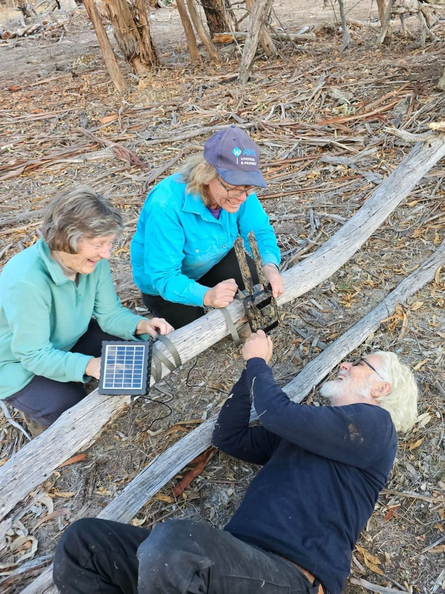
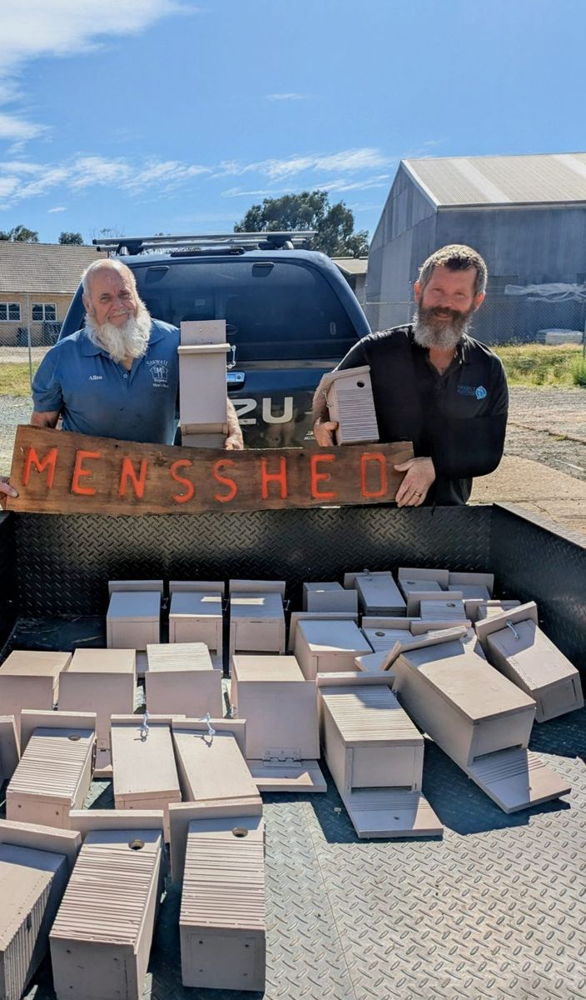

How this guide was made
After bushfires affected private bushland along with national parks in the summers of 2024 and 2025, three of our Wimmera Landcare networks were funded to develop a program to assist folks caring for bushfire-affected native habitat on private property.
The Wimmera Landcare Fire Recovery Partnership Project involved selecting nine demonstration properties across the three Landcare regions, burnt by the 2024 Pomonal–Dadswells Bridge fire and the 2025 Grampians and Little Desert fires. Over 2026, we worked with the landholders to try out simple methods for answering those big questions after fire, and to take on-ground steps to help the bush recover.
We tried out several different ways to monitor the return of biodiversity after fire on these properties. This included automated bird listening stations and trail cameras, seasonal surveys with local bird experts, thermal-scope night surveys, simple counts of hollow-bearing tree density, recording native plant species as they returned, and mapping weeds. We then used those results to help each landholder get started with on-ground interventions, including nest boxes and weed control.
Everything we learned from those nine properties has been compiled into this guide, designed to support anyone who cares for fire-affected native bush on their property.


The project was led by Project Platypus with Wimmera Catchment Management Authority, Horsham District Landcare Network and Hindmarsh Landcare, and was jointly funded by the Commonwealth and Victoria under the Disaster Recovery Funding Arrangements through DEECA’s Grampians Recovery Package.
This project was funded as the Victorian Government recognised that private landholders also play an important role in protecting biodiversity on private land after fire, just as Parks Victoria looks after the park. Your block, however small, is part of how this landscape recovers.
Thank you to our nine demonstration site landholders, to local Landcare groups, and to the Stawell and Pomonal Men’s Sheds.
Acknowledgements: the thank-you line above should name the demonstration site landholders who are happy to be listed. Also: the nine landholders (with their sign-off), the ecologists and birders who contributed, the Men’s Shed, and photographer credits for every image used.